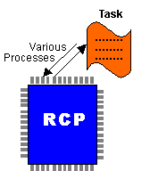

In the N64 operating system, a "task" is a process control unit provided by the RSP in the RCP. A task is for the RCP similar to what a thread is for the CPU. However, the addressing scheme and the access methods for tasks processed by the RCP are different from the addressing scheme and access methods for threads processed by the CPU. There are basically two kinds of tasks, an audio task and a graphics task.
To execute a task, you need to set the necessary information for the task execution in the OSTask data structure defined in the N64 operating system. When you execute the task, the process follows these steps:
The following illustration summarizes RCP task processing:

Nintendo® Confidential
Copyright © 1999
Nintendo of America Inc. All Rights Reserved
Nintendo and N64 are registered trademarks of Nintendo
Last Updated March, 1999